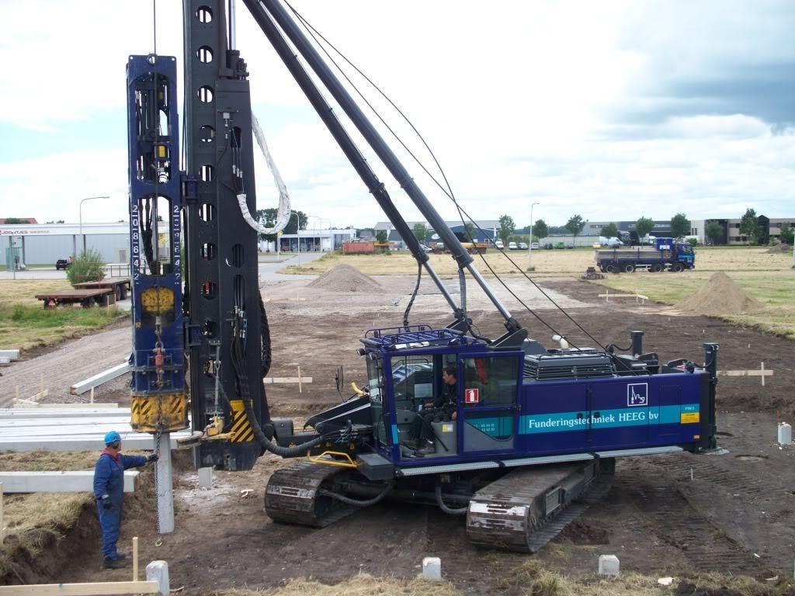

Красфундамент · КрасноярскФундамент.
Фундамент.
Под ваш дом и участок.
Буронабивные, винтовые и забивные сваи, ленточные фундаменты и монолитные плиты в Красноярске.
Рассчитать фундамент
ПРИМЕРЫ РЕШЕНИЙСначала основание.
Сначала основание.
Потом дом.
Для расчёта важны проект будущего дома и условия участка. Обсудим подходящий тип фундамента и объём работ.
Рассчитать фундамент